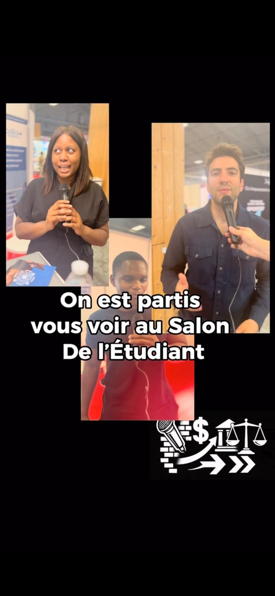
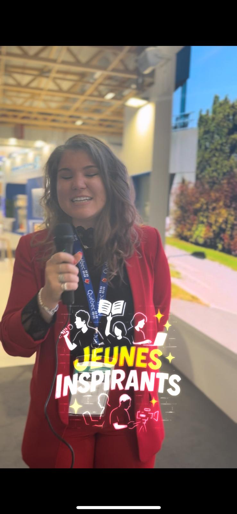

On est partis vous voir
Ce format donne la parole aux jeunes dans différents contextes et aborde diverses notions liées à l'économie selon les domaines. Vous y trouverez des vidéos et des témoignages inspirants.

Jeunes inspirants
Des jeunes que nous avons interviewés et qui nous ont marqué par leur capacité à accrocher la caméra et transmettre leur passion avec authenticité.

Carte blanche
Des jeunes ou experts dans l'économie qui parlent d'un sujet lié à la culture économique en moins de 2 minutes, pour partager savoir et réflexions.


Conseils du coach
Des experts ou professionnels du domaine donnent des conseils pratiques pour les jeunes, sur l'économie, l'entrepreneuriat, et bien plus.